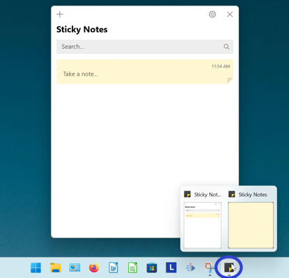
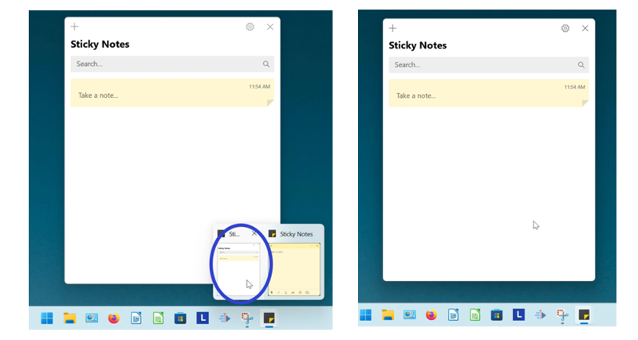

How to Open the Notes List in the Microsoft Sticky Notes App
This tutorial covers:
How to Open the Notes List:
No time to scroll down? Click through this tutorial presentation:
View a video tutorial:
How to Open the Notes List With Search
- Step 1: Go down to the taskbar and click Start (four blue squares).

- Step 2: In the Start menu that opens, click in the search bar at the top and type “sticky notes”.

- Step 3: On the search results screen, click “Notes list”.

- The Notes List opens.

How to Open the Notes List With Hover
- Step 1: Open the Sticky Notes app. Go down to the taskbar and hover the mouse over the Sticky Notes app icon. 
- Step 2: Two small windows appear; one is the Notes List and one is the sticky note. Click the Notes List window to open it. 
How to Open the Notes List With Right Click
- Step 1: First open or pin the Sticky Notes app. Right click the Sticky Notes app icon on the taskbar.

- Step 2: In the menu that opens, click “Notes list”.
- Step 3: The Notes List opens.
How to Open the Notes List From a Sticky Note
- Step 1: Open a sticky note. Type any text into the sticky note and click anywhere inside the Notes List.

- Step 2: On the far right side of a sticky note, click the “Menu” or “…” button.

- Step 3: In the menu that opens, click “Open note” to open the sticky note.

How to Open the Notes List With Keyboard Shortcut
- Step 1: First open a sticky note. On the keyboard press Ctrl + H to open the Notes List.

Refer to these instructions later with this free PDF tutorial.